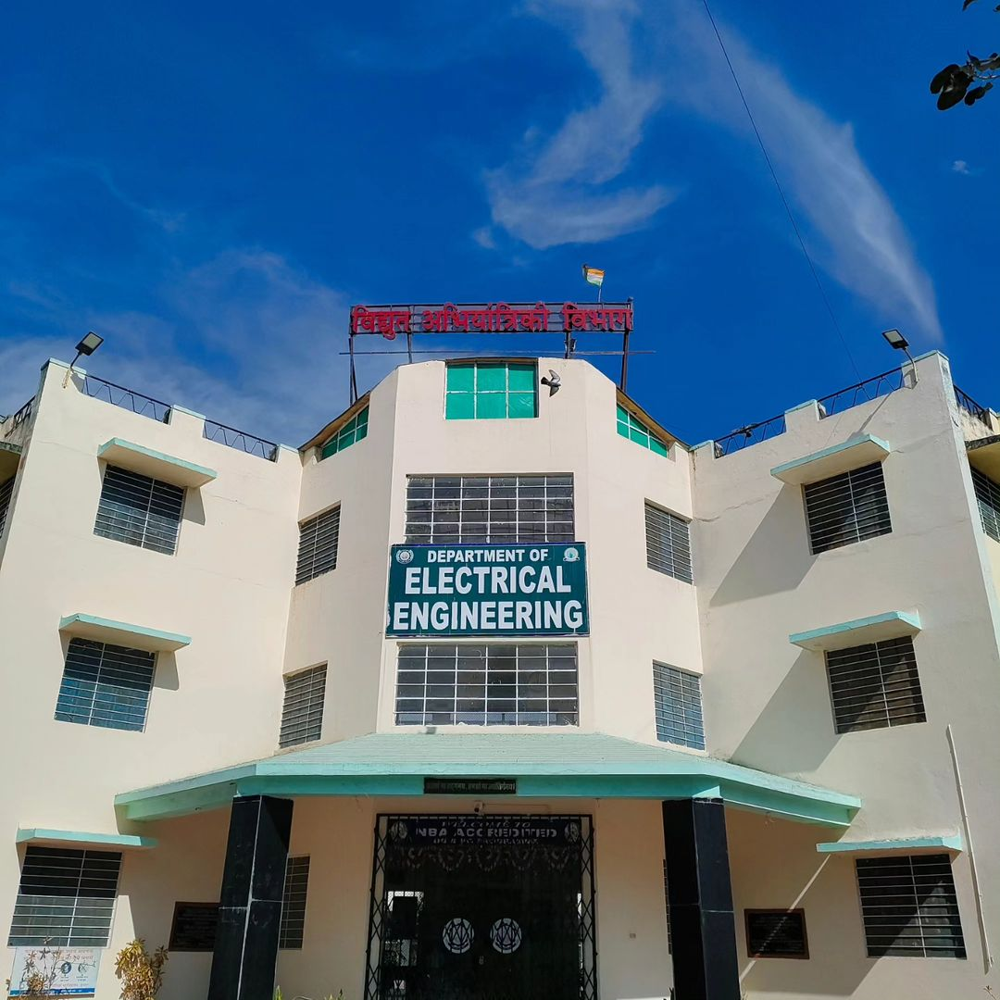

Campus Life
Hobby Clubs - At college levels various hobby clubs are being organized as per facilities available provided the students take interest and generate resources. Photography, radio, model making, music and painting are a few of them.
Educational Tours - The educational tours give exposure to the students about the real scenario of engineering techniques in the field, as such these tours are part of the course curriculum and are assessed. The university contributes actual sleeper class concessional railway fare for the tour subject to maximum limit of Rs 1000/- per student. For other approved tours the university issues only journey concession order of the appropriate class.
If a student misses the tour on reasonable grounds he will be asked to take up 15 days additional training.
Earn While You Learn - A limited number of needy students may be engaged for time bound short-term engagement in workshops, farms and at other places to do the allotted work. Such students shall be paid remuneration so as to help them while they learn, develop a sense of achievement and learn certain techniques through this activity.
Utilities - The college campus has a bank and a post office. Canteen services are also available during office hours. A gymnasium facility is also available where 10-12 students at a time can do different muscular exercises.

Innovations
Smart Class Rooms: Establishment of more than 50 smart class rooms to provide better teaching facilities to students. It also gives better atmosphere and understanding of academics for to students.
E-learning Resources: Development of e-learning resources are the need of the day to make reading material available to students all the times. MPUAT has developed more than 300 e-contents covering all most all courses and are uploaded on university website for open access. Development of Virtual Labs is the main focus area of CTAE.
Internet and Wi/Fi campus: University is well equipped with advance high speed internet facility which is available to all students, faculty and staff of the CTAE. The campus is having Wi/Fi facility which improves the working ability all the times.
Teaching with Collaboration: Another innovative method of teaching involves encouraging student collaboration for various projects. Projects related to their courses are assigned to students and are asked to submit reports for further open discussion. This helps in developing creativeness in student and better learning of the subject. STUDENT-READY program is the most relevant example of this which is very well adopted in the CTAE.
Online Courses and Learning: This trend is being most encouraged in MPUAT and students are accessing to various online courses, trainings, internships etc. All most all the times the course fee is borne by the university. This provides them an opportunity to get better understanding on tough subjects by doing additional courses on the same subjects. It also helps them to focus more on their preferred area and do in-depth research on those subjects.

About DEAN CTAE
Dr P.K.Singh, B.Tech.(Agril.Engg), M.E.(SWC Engineering), Ph.D, is working as Professor in the Department of Soil & Water Engineering, College of Technology & Engineering, Maharana Pratap University of Agriculture & Technology, Udaipur since 1988. He has 33 years of teaching, research and extension experience in the field of Soil and Water Engineering. He has authored 10 books, 17 book chapters, 8 technical bulletins in the field of Soil & Water Conservation and Watershed Management and published 139 research papers in the National and International Journals. He has guided 40 M.Tech. and 8 Ph.D students. He is Principal Investigator of two Research Projects and handled nine Consultancy Projects funded under Corporate Social Responsibility and Central Water Commission, Government of India.
He received prestigious Fulbright Fellowship and visited Florida International University, Miami, USA as visiting Professor in 2010. Dr. Singh also visited 3 other countries namely; Phillipines, Vietnam and Israel; and shared his experiences with the developing world. He received two National Award in the year 1996 and 2001 from Indian Society of Agricultural Engineers, New Delhi for his outstanding contributions in the field of rainwater harvesting and rural development. He received a University Best Teacher Award in the faculty of Engineering and Technology in the year 2003 and in 2019 by Maharana Pratap University of Agriculture and Technology, Udaipur. Dr. Singh is also recipient of SAGY Award conferred by AICTE and presented by Shri M.Venkaiah NaiduHon'ble Vice-President, Government of India, for doubling the farmers income in the university adopted village. He is a member and consultant of various professional societies throughout the country. Dr. Singh also worked as Technical Advisor for Government of Rajasthan in the field of Rainwater Harvesting and Watershed Management. The low cost Technology of Rainwater Harvesting developed by Dr. Singh is widely adopted by Government and NGOs in Southern Rajasthan and other Semi Arid regions of India.